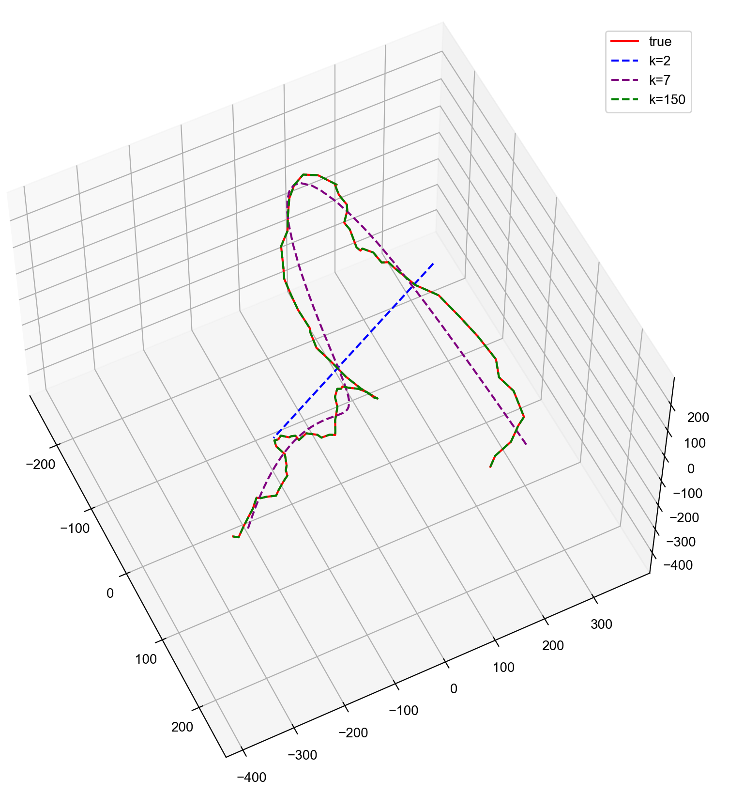
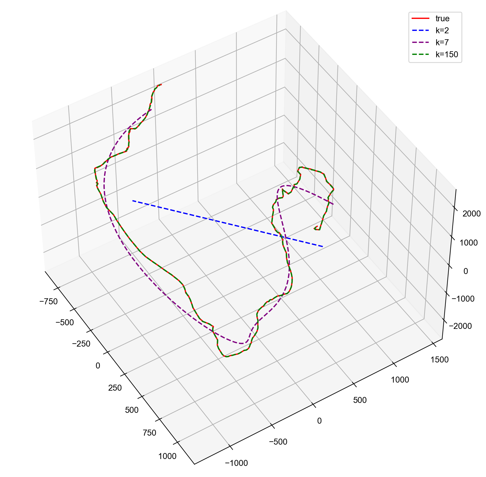
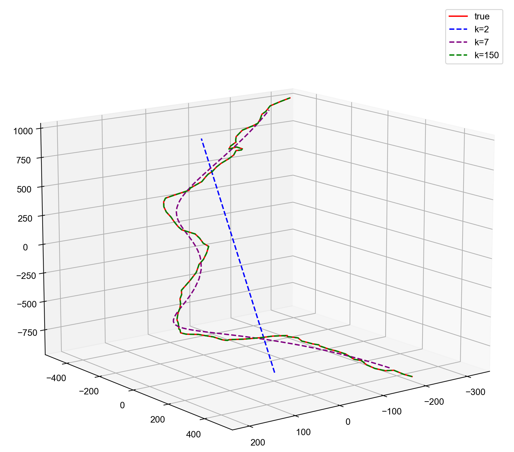
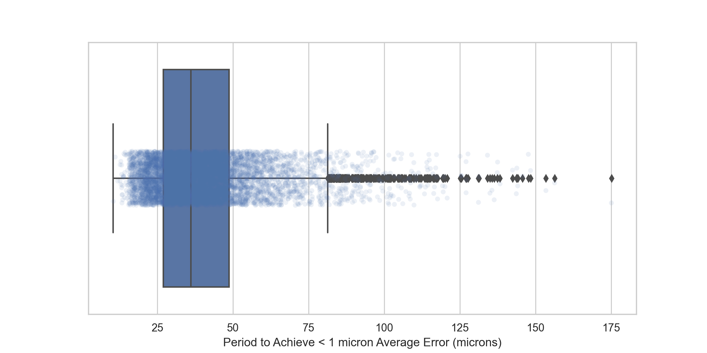

class:inverse ### Sampling Guidelines for Projection Neuron Tracing Thomas L. Athey <br><br> <img src="../../images/funding/jhu_bme_blue.jpg" STYLE="width:100%;"/> <!-- <img src="../images/funding/KNDI.png" STYLE="HEIGHT:95px;"/> --> <br> <!-- .foot[w: <http://neurodata.io/talks/??.html>] --> --- class:inverse ### Problem There are no quantitatively based guidelines on how to trace neurons. --- class:inverse ### Approach: Shannon Sampling Theorem $$ x(t) = \int_{-\infty}^{\infty} X(f) e^{2 \pi i f t}dt$$ Bandlimited $X(f)=0 \; \forall \; \vert f \vert> W$: $$ x(t) = \int_{-W}^{W} X(f) e^{2 \pi i f t}dt$$ Sample at $-n/2W$: $$x(-n/2W) = \int_{-W}^{W} X(f) e^{-2 \pi i f \frac{n}{2W}}dt$$ So, samples in time domain are Fourier coefficients of $X$ <footer, style="font-size: 12px"> Shannon, 1949 </footer> --- class:inverse ### Notation Neuronal curve $$ c: [0,L] \rightarrow \mathbb{R}^3 $$ Three coordinate functions: $$c: s \mapsto [c_1(s), c_2(s), c_3(s)]^T$$ Cosines - Orthonormal basis of even $L^2([-L,L])$ functions $$\psi_0(s)=1,\;\psi_k(s)= \sqrt2 \cos(\frac{k\pi}{L}s)$$ $\hat{f}^K =\sum_{k=0}^K \langle \psi_k, f \rangle \psi_k$. $$\lim_{K\rightarrow \infty} \hat{f}^K = f$$ <footer, style="font-size: 12px"> Chung et. al., 2010 </footer> --- class:inverse ### Least Squares Example 1  --- class:inverse ### Least Squares Example 2  --- class:inverse ### Least Squares Example 3  --- class:inverse ### Goodness of Fit <img src="images/errorvsfreq.png" STYLE="width:75%;" class="center"/> --- class:inverse ### Approximate Bandwidth - 99% of neuron segments achieve submicron error at bandwidth $1/16 \; \mu m^{-1}$  - Conclusion: Sample every ~32 microns